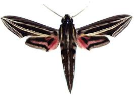
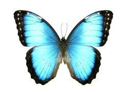
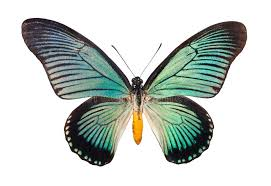

  
| Infraorden | División | Especies |
|---|---|---|
| Heteroneura | Nepticulina | Nepticuloidea |
| Etimonotrysia | Palaephatoidea | |
| Tischerioidea | ||
| Incurvariina | Andesianoidea | |
| Adeloidea | ||
| Ditrysia | Incertae sedis | |
| Tineoidea | ||
| Gracillarioidea | ||
| Yponomeutoidea |
©2018 | Todos los derechos reservados
Walmart.com.mx: Siempre encuentras todo y pagas menos
Walmart USSuperamaSam`s ClubWalmart México y CentroaméricaBodega Aurrera